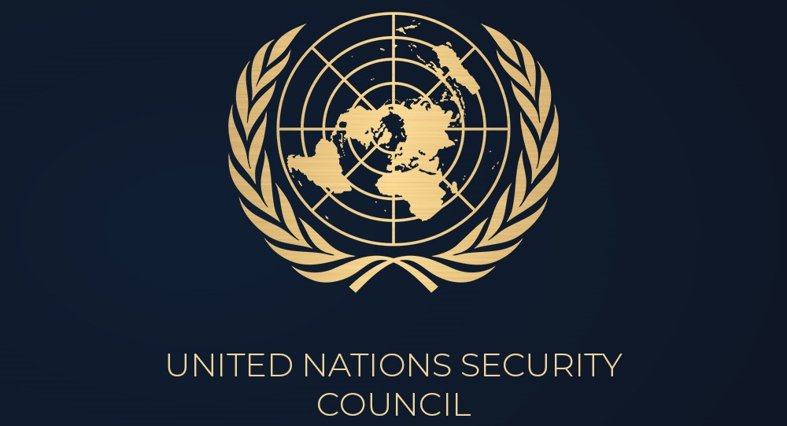

It Serves as the central forum for discussing international economic and social issues, and formulating policy recommendations addressed to member states and the United Nations System.
The Security Council is one of the six main organs of the United Nations established under the UN Charter. Its primary responsibility is maintaining international peace and security. The Council has 15 Members (5 permanent and 10 non-permanent members).

The Human Rights Council is an intergovernmental body within the United Nations system responsible for strengthening the promotion and protection of human rights around the globe and for addressing situations of human rights violations and making recommendations on them.

The purpose of DISEC in the General Assembly is to establish 'general principles of cooperation in the maintenance of international peace and security, including the principles governing disarmament and the regulation of armaments